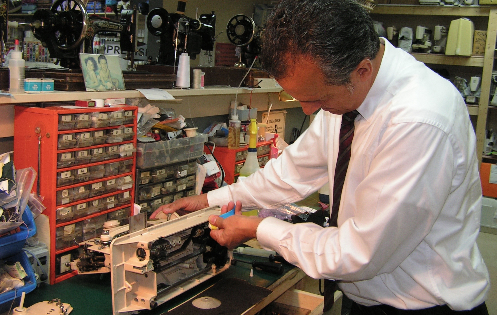

From basic starter models to top-of-the-line embroidery machines, K-W Sewing Machines features the largest selection of Singer®, Janome® and Elna® sewing machines and sergers in the Kitchener-Waterloo area. Our knowledgeable staff, teachers, and technicians are genuinely passionate about sewing.
Serving clients in the Waterloo Region for more than 35 years, K-W Sewing Machines also carries industrial machines and accessories for the professional seamstress or tailor.
We offer a vast selection of parts and accessories for all makes of sewing machines and sergers, and we can service your machine in-store. If you are looking for a sewing notion or part that we do not have in stock, we can special order it for you.
Whatever sewing supplies you need, you'll find them here. Our huge stock includes a wide variety of needles, thread, trim, ribbon, scissors, quilting tools, knitting machines, sewing cabinets and more. And we have the largest selection of buttons and sewing baskets in the area!
K-W Sewing Machines can help you get the most out of your purchase by learning how to use your sewing machine to its full potential. We provide unlimited, free one-on-one lessons with any in-store sewing machine purchase*. We also offer beginner sewing and quilting classes!
Contact K-W Sewing Machines today, or stop in our store at Frederick Mall. We offer financing and an easy layaway plan.
* Not applicable to JanomeSAH online shopping.
Located at Frederick Mall in Kitchener, K-W Sewing Machines has everything you need to make sewing easier and more enjoyable. We offer expert in-store sewing machine repairs and classes for the sewing enthusiast. Stop into our showroom today to experience the latest in sewing machine technology. We are looking forward to meeting you.
If you've wanted to learn to sew, or you're ready to branch into bigger projects like quilting, now is the time to start! We believe that anyone can learn to sew, and it is our goal to inspire people to learn this important and creative life skill.
We offer special discounts to class participants on all supplies needed for classes.
Bring your sewing machine and learn the basic skills needed to sew from a simple pattern. Learn to sew a skirt or pajama pants for your first project. A second project can usually be completed, time permitting. Bonnie will teach you the skills and techniques to have you sewing like a pro in no time.
On Tuesdays: September 15, 22, 29 and October 6, 13, 20 6:30 p.m. - 9:00 p.m. $175, supplies extra
Experience cutting, piecing and machine quilting using your own sewing machine and all the right stuff and machine quilting feet such as the ¼-inch foot, walking foot, and free-motion foot. Project details to be announced. Feel free to call Wendy for more information.
On Mondays: September 14, 21, 28 and October 5 (full) 6:30 p.m. - 9:00 p.m. $120, supplies extra
Explore machine quilting techniques such as ¼-inch piecing, free motion, and stitch-in-the-ditch using your sewing machine and the appropriate machine quilting attachments. Participants will also experiment with a variety of specialty and decorative threads.
On: Monday, October 19 6:30 p.m. - 9:00 p.m. $30 plus $15 fabric kit

K-W Sewing Machines services and repairs all makes and models of domestic sewing machines, sergers, and embroidery machines, and we have access to special order parts for your machine. Our factory-trained technician will clean, oil, and lubricate your sewing machine and check all important elements, including the feed mechanism, thread delivery, bobbin-case housing, tensions, and electrical issues.
Your satisfaction is important to us, and repairs are backed by our 90-day warranty. Bring your machine to our store for a free estimate*, or contact us for more information.
* Please note: Some exceptions do apply.Q: How much will my sewing machine or serger cost to repair? Is it necessary to make an appointment to have it assessed? A: The price of your repair can only be determined after the machine has been assessed by our technician. Most machines qualify for a free estimate! It is not necessary to make an appointment, but you will need to leave your machine with us to be assessed.
Q: Can your technician come to my home to repair my machine? A: Unfortunately, due to high demand for repairs, we do not have a technician who can make house calls. Please bring your machine to our store at Frederick Mall.
Q: Does your mechanic repair industrial sewing machines? A: Our mechanic does not repair industrial machines at this time, but we do stock industrial parts and needles. Please contact us if you would like us to recommend an industrial mechanic.
Q: Can I have a free lesson on a machine that I bought from your store three years ago? A: Yes, you most certainly can! We provide unlimited one-on-one lessons on every machine purchased in our store.